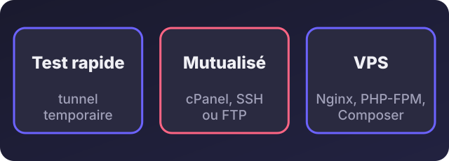
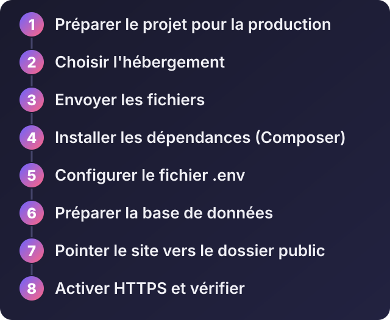
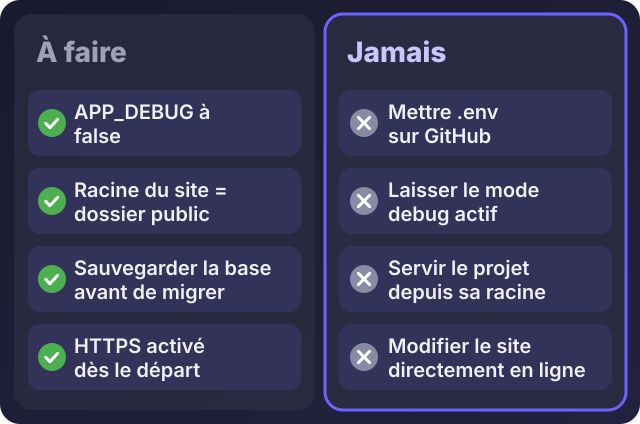

Comment mettre un projet Laravel en ligne (hébergement mutualisé ou VPS), pas à pas

Écouter cet article · environ 8 min
Votre projet Laravel marche très bien sur votre ordinateur. Il faut maintenant le voir en ligne, pour le montrer à un client ou le mettre en service. C'est l'étape où beaucoup de projets restent bloqués : erreur 500, page blanche, fichiers introuvables. Voici la méthode, avec les trois façons de faire.
Les commandes viennent de la documentation officielle de déploiement de Laravel (version 12 au moment de l'écriture) : si vous utilisez une autre version, vérifiez-y le détail.
Trois façons de voir son projet en ligne

- Le test rapide, pour montrer le projet sans l'héberger : provisoire.
- L'hébergement mutualisé, le plus simple et le moins cher.
- Le VPS, le plus souple, pour une vraie application.
Les huit étapes

Étape 1 : préparer le projet
Avant d'envoyer quoi que ce soit :
- Le fichier
.envn'est jamais envoyé sur GitHub. Il contient vos mots de passe. Laravel fournit un.env.exampleà la place : c'est lui qui est versionné. - Préparez les fichiers du design : sur votre ordinateur, lancez
npm install && npm run build. Beaucoup d'hébergements mutualisés n'ont pas Node : vous enverrez simplement le dossierpublic/buildproduit. - Vérifiez la version de PHP que demande votre version de Laravel. Pour Laravel 12, c'est PHP 8.2 ou plus, avec plusieurs extensions courantes (mbstring, openssl, pdo, xml, curl, etc.).
- Sauvegardez votre base de données locale si vous voulez la reprendre.
- Mettez le code sur GitHub (sans le
.env) : c'est la façon la plus propre de l'envoyer ensuite sur le serveur.
Voie 1 : voir son projet tout de suite, sans hébergement
Pour montrer un projet quelques heures à un client, vous pouvez lancer le serveur local et le rendre accessible par un tunnel :
php artisan serveUn outil comme ngrok ou Cloudflare Tunnel crée alors une adresse publique temporaire qui renvoie vers votre ordinateur. C'est pratique pour une démonstration. Ce n'est pas un hébergement : quand votre ordinateur s'éteint, le site disparaît.
Voie 2 : l'hébergement mutualisé (cPanel)
- Vérifiez la version de PHP dans le panneau de l'hébergeur (souvent « Sélectionner la version PHP »), et activez les extensions demandées.
- Créez la base de données MySQL, un utilisateur et son mot de passe. Notez les trois.
- Envoyez le projet : en archive ZIP avec le gestionnaire de fichiers, par FTP, ou avec Git si l'hébergeur offre l'accès SSH.
- Installez les dépendances. Avec un accès SSH :
composer install --no-dev --optimize-autoloader. Sans SSH, préparez le dossiervendorsur votre ordinateur avec cette même commande et envoyez-le. - Créez le fichier
.envsur le serveur, avec les informations de la base de données et ces valeurs :
APP_ENV=production
APP_DEBUG=false
APP_URL=https://votre-domaine.com- Le point le plus important : la racine du site. Laravel doit être servi depuis le dossier
public. Dans le panneau de l'hébergeur, cherchez l'option qui permet de choisir la « racine du document » du domaine, et pointez-la verspublic.
Si votre hébergeur ne permet pas de changer la racine, une solution de secours existe : placer tout le projet dans un dossier au-dessus du dossier public du site, et ne mettre dans ce dossier public que le contenu de public, en adaptant les deux chemins dans index.php. Elle fonctionne, mais elle est plus fragile : faites-vous aider si vous n'êtes pas à l'aise.
- Les commandes de mise en route, en SSH (ou via l'outil de commandes de l'hébergeur) :
php artisan key:generate
php artisan migrate --force
php artisan storage:link
php artisan optimize- Activez le HTTPS : la plupart des hébergeurs offrent un certificat gratuit en un clic.
Voie 3 : le VPS (exemple avec Ubuntu et Nginx)
Voici la méthode classique sur un VPS Ubuntu (voir mon article sur le choix de l'hébergement), accessible en SSH. C'est celle que recommande la documentation de Laravel, avec Nginx.
1. Installer les logiciels
sudo apt update
sudo apt install -y nginx php-fpm php-mysql php-xml php-mbstring php-curl php-zip unzip git mysql-server composerVérifiez la version de PHP installée avec php -v : elle doit respecter le minimum de votre version de Laravel.
2. Créer la base de données
CREATE DATABASE monappli CHARACTER SET utf8mb4 COLLATE utf8mb4_unicode_ci;
CREATE USER 'monappli'@'localhost' IDENTIFIED BY 'UN_MOT_DE_PASSE_LONG_ET_UNIQUE';
GRANT ALL PRIVILEGES ON monappli.* TO 'monappli'@'localhost';
FLUSH PRIVILEGES;3. Récupérer le projet et le préparer
cd /var/www
sudo git clone https://github.com/VOTRE_COMPTE/votre-projet.git monappli
cd monappli
sudo composer install --no-dev --optimize-autoloader
sudo cp .env.example .env
# puis éditez .env : APP_ENV=production, APP_DEBUG=false, APP_URL, et les DB_*
sudo php artisan key:generate
sudo php artisan migrate --force
sudo php artisan storage:link
sudo php artisan optimize
sudo chown -R www-data:www-data storage bootstrap/cache
sudo chmod -R 775 storage bootstrap/cacheLes deux dossiers storage et bootstrap/cache doivent être modifiables par le serveur web : c'est une exigence de Laravel. Pour un usage durable, créez un utilisateur dédié au déploiement plutôt que de tout lancer avec sudo.
4. Configurer Nginx
Créez le fichier /etc/nginx/sites-available/monappli, d'après l'exemple de la documentation de Laravel :
server {
listen 80;
listen [::]:80;
server_name votre-domaine.com www.votre-domaine.com;
root /var/www/monappli/public;
add_header X-Frame-Options "SAMEORIGIN";
add_header X-Content-Type-Options "nosniff";
index index.php;
charset utf-8;
location / {
try_files $uri $uri/ /index.php?$query_string;
}
location ~ ^/index\.php(/|$) {
fastcgi_pass unix:/var/run/php/php8.3-fpm.sock;
fastcgi_param SCRIPT_FILENAME $realpath_root$fastcgi_script_name;
include fastcgi_params;
fastcgi_hide_header X-Powered-By;
}
location ~ /\.(?!well-known).* {
deny all;
}
}Adaptez deux choses : le nom de domaine, et le numéro de version de PHP dans php8.3-fpm.sock (celui que vous a donné php -v). Puis activez le site :
sudo ln -s /etc/nginx/sites-available/monappli /etc/nginx/sites-enabled/
sudo nginx -t
sudo systemctl reload nginx5. Pointer le nom de domaine vers le serveur
Chez le gestionnaire de votre nom de domaine, créez un enregistrement A qui pointe vers l'adresse IP de votre VPS (voir l'article sur l'adresse IP). Attendez la propagation, puis ouvrez votre domaine.
6. Activer le HTTPS
sudo apt install -y certbot python3-certbot-nginx
sudo certbot --nginx -d votre-domaine.com -d www.votre-domaine.comCertbot obtient un certificat gratuit (Let's Encrypt) et configure Nginx. Il se renouvelle ensuite automatiquement.
Vérifier que tout fonctionne
- La page d'accueil s'affiche, en HTTPS, sans avertissement.
- Le chemin
/up: Laravel inclut une route de santé qui répond avec un code de succès quand l'application a démarré. - Les journaux : en cas de problème, regardez
storage/logs/laravel.log. Ne mettez pasAPP_DEBUGàtruepour y voir plus clair : cela exposerait vos informations sensibles.
Les erreurs les plus fréquentes
- Erreur 500 après l'envoi. Les causes habituelles : le
.envmanque, la clé d'application n'est pas générée, les permissions destoragesont mauvaises, ou la version de PHP est trop ancienne. Le journal vous le dit. - Les routes donnent une erreur 404 sauf l'accueil. Avec Nginx, c'est la ligne
try_files. Avec Apache, il faut activer la réécriture d'adresses (mod_rewrite) et autoriser le fichier.htaccess. - Les couleurs et le design manquent. Vous avez oublié
npm run build, ou le dossierpublic/buildn'est pas envoyé. - Des valeurs du
.envqui deviennent « null ». Aprèsconfig:cache(inclus dansoptimize), Laravel ne lit plus le.env: il faut n'appelerenv()que dans les fichiers du dossierconfig. - Mélange HTTP et HTTPS. Vérifiez
APP_URL.

Mettre à jour ensuite
Chaque fois que vous modifiez le projet, travaillez en local, envoyez sur GitHub, puis sur le serveur :
git pull
composer install --no-dev --optimize-autoloader
php artisan migrate --force
php artisan optimizeSauvegardez la base avant chaque migration, et redémarrez vos processus longs (files d'attente) s'il y en a.
Et si je ne veux pas gérer tout cela ?
Des plateformes spécialisées s'en chargent : Laravel Forge pour gérer vos propres serveurs sans tout configurer à la main, ou Laravel Cloud pour un déploiement entièrement géré. Elles sont payantes : regardez leurs offres actuelles.
Vous pouvez aussi me confier la mise en ligne : je prépare le serveur, je déploie le projet, je configure le nom de domaine et le HTTPS, et je mets en place les sauvegardes. Envoyez-moi un message sur WhatsApp avec le nom du projet et l'hébergement choisi.